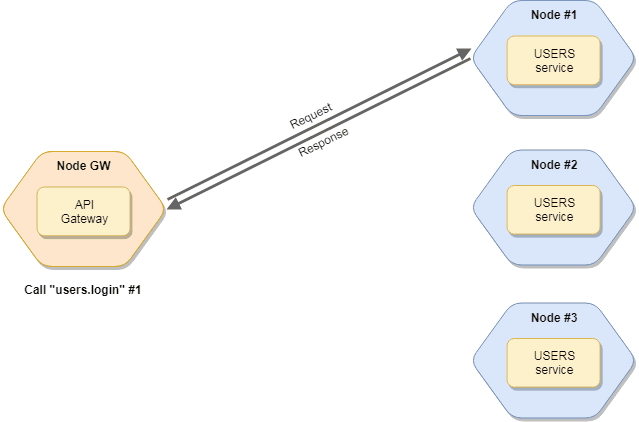

The actions are the callable/public methods of the service. The action calling represents a remote-procedure-call (RPC). It has request parameters & returns response, like a HTTP request.
If you have multiple instances of services, the broker will load balancing the request among instances. Read more about balancing.

Call services
To call a service, use the broker.call method. The broker looks for the service (and a node) which has the given action and call it. The function returns a Promise.
Syntax
const res = await broker.call(actionName, params, opts); |
The actionName is a dot-separated string. The first part of it is the service name, while the second part of it represents the action name. So if you have a posts service with a create action, you can call it as posts.create.
The params is an object which is passed to the action as a part of the Context. The service can access it via ctx.params. It is optional.
The opts is an object to set/override some request parameters, e.g.: timeout, retryCount. It is optional.
Available calling options:
| Name | Type | Default | Description |
|---|---|---|---|
timeout |
Number |
null |
Timeout of request in milliseconds. If the request is timed out and you don’t define fallbackResponse, broker will throw a RequestTimeout error. To disable set 0. If it’s not defined, broker uses the requestTimeout value of broker options. Read more |
retries |
Number |
null |
Count of retry of request. If the request is timed out, broker will try to call again. To disable set 0. If it’s not defined, broker uses the retryPolicy.retries value of broker options. Read more |
fallbackResponse |
Any |
null |
Returns it, if the request has failed. Read more |
nodeID |
String |
null |
Target nodeID. If set, it will make a direct call to the given node. |
meta |
Object |
null |
Metadata of request. Access it via ctx.meta in actions handlers. It will be transferred & merged at nested calls, as well. |
parentCtx |
Context |
null |
Parent Context instance. |
requestID |
String |
null |
Request ID or correlation ID. It appears in the metrics events. |
Usages
Call without paramsbroker.call("user.list")
.then(res => console.log("User list: ", res));
Call with paramsbroker.call("user.get", { id: 3 })
.then(res => console.log("User: ", res));
Call with async/awaitconst res = await broker.call("user.get", { id: 3 });
console.log("User: ", res);
Call with optionsbroker.call("user.recommendation", { limit: 5 }, {
timeout: 500,
retries: 3,
fallbackResponse: defaultRecommendation
}).then(res => console.log("Result: ", res));
Call with error handlingbroker.call("posts.update", { id: 2, title: "Modified post title" })
.then(res => console.log("Post updated!"))
.catch(err => console.error("Unable to update Post!", err));
Direct call: get health info from the “node-21” nodebroker.call("$node.health", {}, { nodeID: "node-21" })
.then(res => console.log("Result: ", res));
Metadata
Send meta informations to services with meta property. Access it via ctx.meta in action handlers. Please note at nested calls the meta is merged.broker.createService({
name: "test",
actions: {
first(ctx) {
return ctx.call("test.second", null, { meta: {
b: 5
}});
},
second(ctx) {
console.log(ctx.meta);
// Prints: { a: "John", b: 5 }
}
}
});
broker.call("test.first", null, { meta: {
a: "John"
}});
The meta is sent back to the caller service. Use it to send extra meta information back to the caller. E.g.: send response headers back to API gateway or set resolved logged in user to metadata.
broker.createService({ |
Streaming
Moleculer supports Node.js streams as request params and as response. Use it to transfer uploaded file from a gateway or encode/decode or compress/decompress streams.
Examples
Send a file to a service as a streamconst stream = fs.createReadStream(fileName);
broker.call("storage.save", stream, { meta: { filename: "avatar-123.jpg" }});
Please note, the params should be a stream, you cannot add any more variables to the params. Use the meta property to transfer additional data.
Receiving a stream in a servicemodule.exports = {
name: "storage",
actions: {
save(ctx) {
const s = fs.createWriteStream(`/tmp/${ctx.meta.filename}`);
ctx.params.pipe(s);
}
}
};
Return a stream as response in a servicemodule.exports = {
name: "storage",
actions: {
get: {
params: {
filename: "string"
},
handler(ctx) {
return fs.createReadStream(`/tmp/${ctx.params.filename}`);
}
}
}
};
Process received stream on the caller sideconst filename = "avatar-123.jpg";
broker.call("storage.get", { filename })
.then(stream => {
const s = fs.createWriteStream(`./${filename}`);
stream.pipe(s);
s.on("close", () => broker.logger.info("File has been received"));
})
AES encode/decode example serviceconst crypto = require("crypto");
const password = "moleculer";
module.exports = {
name: "aes",
actions: {
encrypt(ctx) {
const encrypt = crypto.createCipher("aes-256-ctr", password);
return ctx.params.pipe(encrypt);
},
decrypt(ctx) {
const decrypt = crypto.createDecipher("aes-256-ctr", password);
return ctx.params.pipe(decrypt);
}
}
};
Action visibility
The action has a visibility property to control the visibility & callability of service actions.
Available values:
publishedornull: public action. It can be called locally, remotely and can be published via API Gatewaypublic: public action, can be called locally & remotely but not published via API GWprotected: can be called only locally (from local services)private: can be called only internally (viathis.actions.xy()inside service)
Change visibilitymodule.exports = {
name: "posts",
actions: {
// It's published by default
find(ctx) {},
clean: {
// Callable only via `this.actions.clean`
visibility: "private",
handler(ctx) {}
}
},
methods: {
cleanEntities() {
// Call the action directly
return this.actions.clean();
}
}
}
The default values is
null(meanspublished) due to backward compatibility.
Action hooks
Define action hooks to wrap certain actions coming from mixins.
There are before, after and error hooks. Assign it to a specified action or all actions (*) in service.
The hook can be a Function or a String. The latter must be a local service method name.
Before hooks
const DbService = require("moleculer-db"); |
After & Error hooks
const DbService = require("moleculer-db"); |
The recommended use case is to create mixins filling up the service with methods and in hooks set method names.
Mixinmodule.exports = {
methods: {
checkIsAuthenticated(ctx) {
if (!ctx.meta.user)
throw new Error("Unauthenticated");
},
checkUserRole(ctx) {
if (ctx.action.role && ctx.meta.user.role != ctx.action.role)
throw new Error("Forbidden");
},
checkOwner(ctx) {
// Check the owner of entity
}
}
}
Use mixin methods in hooksconst MyAuthMixin = require("./my.mixin");
module.exports = {
name: "posts",
mixins: [MyAuthMixin]
hooks: {
before: {
"*": ["checkIsAuthenticated"],
create: ["checkUserRole"],
update: ["checkUserRole", "checkOwner"],
remove: ["checkUserRole", "checkOwner"]
}
},
actions: {
find: {
// No required role
handler(ctx) {}
},
create: {
role: "admin",
handler(ctx) {}
},
update: {
role: "user",
handler(ctx) {}
}
}
};
Contexts
When you call an action, the broker creates a Context instance which contains all request information and passes it to the action handler as a single argument.
Available properties & methods of Context:
| Name | Type | Description |
|---|---|---|
ctx.id |
String |
Context ID |
ctx.broker |
ServiceBroker |
Instance of the broker. |
ctx.action |
Object |
Instance of action definition. |
ctx.nodeID |
String |
The caller or target Node ID. |
ctx.requestID |
String |
Request ID. If you make nested-calls, it will be the same ID. |
ctx.parentID |
String |
Parent context ID (in nested-calls). |
ctx.params |
Any |
Request params. Second argument from broker.call. |
ctx.meta |
Any |
Request metadata. It will be also transferred to nested-calls. |
ctx.level |
Number |
Request level (in nested-calls). The first level is 1. |
ctx.call() |
Function |
Make nested-calls. Same arguments like in broker.call |
ctx.emit() |
Function |
Emit an event, same as broker.emit |
ctx.broadcast() |
Function |
Broadcast an event, same as broker.broadcast |
Context tracking
If you want graceful service shutdowns, enable the Context tracking feature in broker options. If you enable it, all services will wait for all running contexts before shutdown.
A timeout value can be defined with shutdownTimeout broker option. The default values is 5 seconds.
**Enable context tracking & change the timeout value.const broker = new ServiceBroker({
nodeID: "node-1",
tracking: {
enabled: true,
shutdownTimeout: 10 * 1000
}
});
The shutdown timeout can be overwritten by
$shutdownTimeoutproperty in service settings.
Disable tracking in calling option
broker.call("posts.find", {}, { tracking: false }); |